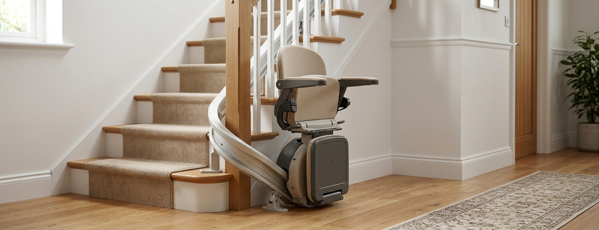

Les quatre solutions en un tableau
Synthèse indicative — les conditions exactes (garanties, contrats, loyers) varient selon les enseignes et doivent être vérifiées sur devis.
Tout part du rail : est-il réutilisable ?
Avant de comparer les prix, une question technique conditionne tout le reste. Un rail droit est un profilé standard : il se recoupe à la longueur d’une autre volée, ce qui rend l’occasion, le reconditionné et la location possibles. Un rail tournant est cintré pour un escalier précis : virages, pente et paliers lui sont propres. Sauf géométrie strictement identique — cas rarissime —, il est inutilisable ailleurs.
Conclusion pratique : si votre escalier est tournant, le débat occasion/location est presque toujours clos d’avance — seuls le neuf et, marginalement, le reconditionné avec rail neuf restent réalistes. Identifiez d’abord votre configuration avec notre guide droit ou tournant.
Le neuf : la référence de comparaison
Appareil dimensionné pour votre escalier et votre morphologie, garantie complète, pose et prise en main par l’installateur, accès aux pièces détachées pendant toute la durée de vie : le neuf est la solution par défaut d’un besoin durable. C’est aussi la seule qui ouvre systématiquement droit aux aides à l’adaptation du logement, lesquelles exigent en général une facture d’installation par un professionnel. Fourchettes détaillées dans notre guide des prix : 2 500 – 5 500 € posé en droit, 6 000 – 12 000 € en tournant.
Le reconditionné : l’occasion sécurisée par un professionnel
Un appareil repris, révisé en atelier (moteur, batteries, sellerie) puis réinstallé par l’enseigne, généralement 20 à 40 % sous le prix du neuf avec une garantie réduite mais réelle — souvent un an. Le rail est le plus souvent neuf ou recoupé, la pose et la mise en service sont incluses.
- ·À vérifier : ce qui a été réellement remplacé (batteries neuves ?), la durée de garantie, et la disponibilité des pièces pour ce modèle parfois ancien.
- ·Limite : le choix est restreint au stock du moment — options et coloris ne se commandent pas.
L’occasion entre particuliers : l’économie la plus fragile
Un appareil à quelques centaines d’euros sur une petite annonce semble imbattable. Comptez ce qui manque au prix affiché :
- ·La dépose chez le vendeur et le transport — un rail de plusieurs mètres ne voyage pas dans un coffre.
- ·La nouvelle pose — peu d’installateurs acceptent de poser un appareil qu’ils n’ont pas vendu ; quand ils acceptent, la prestation se paie et n’emporte pas garantie de l’appareil.
- ·La compatibilité — longueur et pente du rail, côté d’installation, charge maximale : tout doit correspondre à votre escalier.
- ·L’état réel — batteries en fin de vie (100 – 300 €), usure moteur invisible, pièces introuvables sur un modèle arrêté.
Une fois ces postes ajoutés, l’écart avec un reconditionné garanti fond souvent à quelques centaines d’euros — sans la garantie. L’occasion entre particuliers ne se justifie vraiment qu’avec un escalier droit simple, un appareil récent vérifiable et un poseur identifié avant l’achat.
La location : la bonne réponse au besoin temporaire
Convalescence après une opération, retour d’hospitalisation, attente d’un déménagement : quand le besoin est borné dans le temps, la location évite d’immobiliser plusieurs milliers d’euros. Le contrat type comprend des frais d’installation initiaux puis un loyer mensuel, maintenance et dépannage inclus, et le retrait en fin de contrat. Elle n’existe en pratique que pour les escaliers droits.
Le point de bascule : au-delà de 12 à 18 mois de loyers cumulés, l’achat (neuf aidé ou reconditionné) redevient généralement plus économique. Faites le calcul sur la durée prévisible du besoin, frais d’installation compris, et vérifiez les conditions de sortie anticipée du contrat.
Coût initial contre coût total : un exemple
Montants fictifs et arrondis, entretien estimé inclus pour l’achat. La hiérarchie s’inverse selon la durée réelle du besoin et l’éligibilité aux aides : moins de 12 mois, la location gagne ; éligible MaPrimeAdapt’, le neuf devient difficile à battre.
Les questions à poser avant de signer
- ✓Qui pose l’appareil, et qui garantit la pose ?
- ✓Que couvre exactement la garantie, et pendant combien de temps ?
- ✓Les batteries sont-elles neuves ? Sinon, quel âge ont-elles ?
- ✓Les pièces détachées de ce modèle sont-elles encore disponibles ?
- ✓Location : conditions de sortie anticipée et frais de retrait ?
- ✓Que devient l’appareil en fin d’usage (reprise, rachat, retrait) ?
Comparer les solutions adaptées à votre escalier
Décrivez votre escalier, la durée estimée du besoin et votre secteur afin de vérifier les solutions disponibles. Gratuit et sans engagement.
Questions fréquentes
Combien coûte un monte-escalier d’occasion ?
Entre particuliers, l’appareil seul se négocie souvent de quelques centaines d’euros à 1 500 €. Le coût réel ajoute dépose, transport, nouvelle pose et remise en état — comptez le total avant de comparer au reconditionné garanti (−20 à −40 % du neuf).
Peut-on acheter un monte-escalier tournant d’occasion ?
En pratique, presque jamais : le rail tournant est cintré pour un escalier précis et ne s’adapte pas au vôtre. Seul le siège pourrait théoriquement être réutilisé avec un rail neuf — une économie marginale que peu d’installateurs proposent.
Qui installe un appareil acheté à un particulier ?
C’est le point bloquant : la plupart des enseignes ne posent que ce qu’elles vendent. Identifiez et faites chiffrer un poseur avant d’acheter — pose payante, sans garantie de l’appareil lui-même.
La location inclut-elle l’entretien et les pannes ?
Dans les contrats types, oui : maintenance, dépannage et retrait final sont compris dans le loyer. Vérifiez les frais d’installation initiaux, la durée minimale d’engagement et les conditions de sortie anticipée.
Les aides financières s’appliquent-elles à l’occasion ou à la location ?
Les principales aides (MaPrimeAdapt’ notamment) financent des travaux facturés par un professionnel : l’achat entre particuliers en est de fait exclu, et la location relève d’autres logiques. Un reconditionné posé et facturé par un professionnel peut en revanche entrer dans le cadre — à valider avec l’organisme avant d’acheter.
Peut-on revendre son monte-escalier après usage ?
Un appareil droit récent se revend, à prix modeste — c’est le marché de l’occasion décrit ici, avec ses limites. Certaines enseignes proposent une reprise. Pour un tournant, la valeur de revente est proche de zéro : anticipez plutôt le coût de dépose.
Le reconditionné est-il aussi fiable que le neuf ?
Un reconditionnement sérieux (moteur révisé, batteries neuves, sellerie contrôlée) donne un appareil fiable, couvert par une garantie réduite. La différence durable tient à l’âge du modèle : pièces et compatibilités s’amenuisent avec les années.
Pour une convalescence de 6 mois, que choisir ?
Si l’escalier est droit, la location est taillée pour ce cas : installation rapide, coût borné, retrait en fin de besoin. Si l’escalier est tournant, la location n’existe pratiquement pas — étudiez un aménagement temporaire du rez-de-chaussée avant un achat.